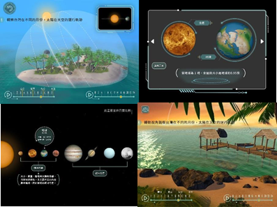
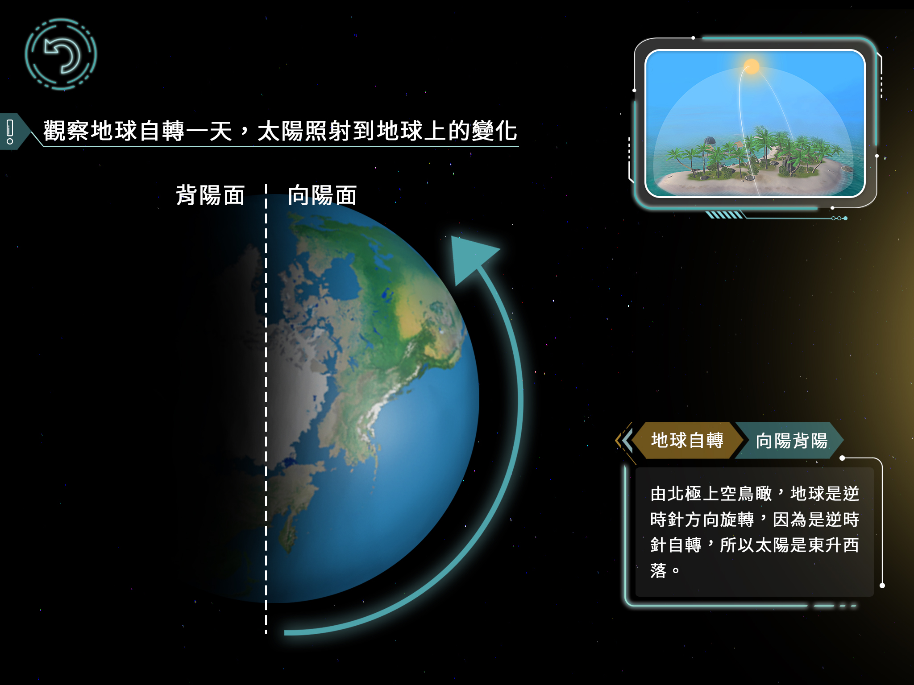
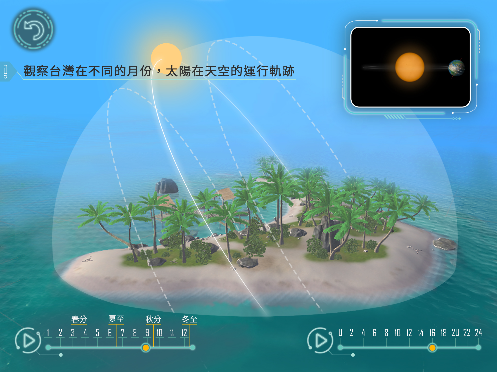
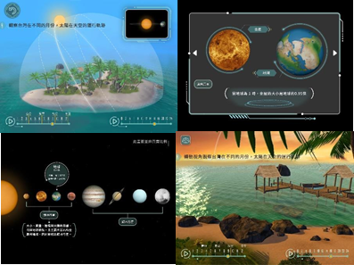
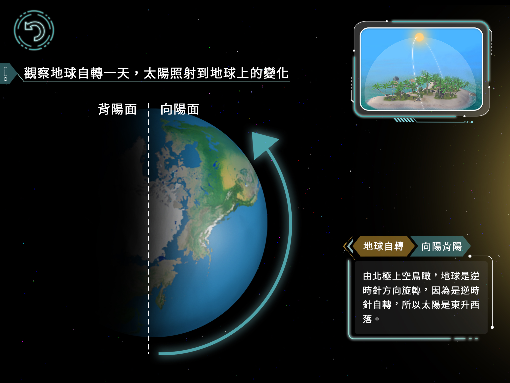
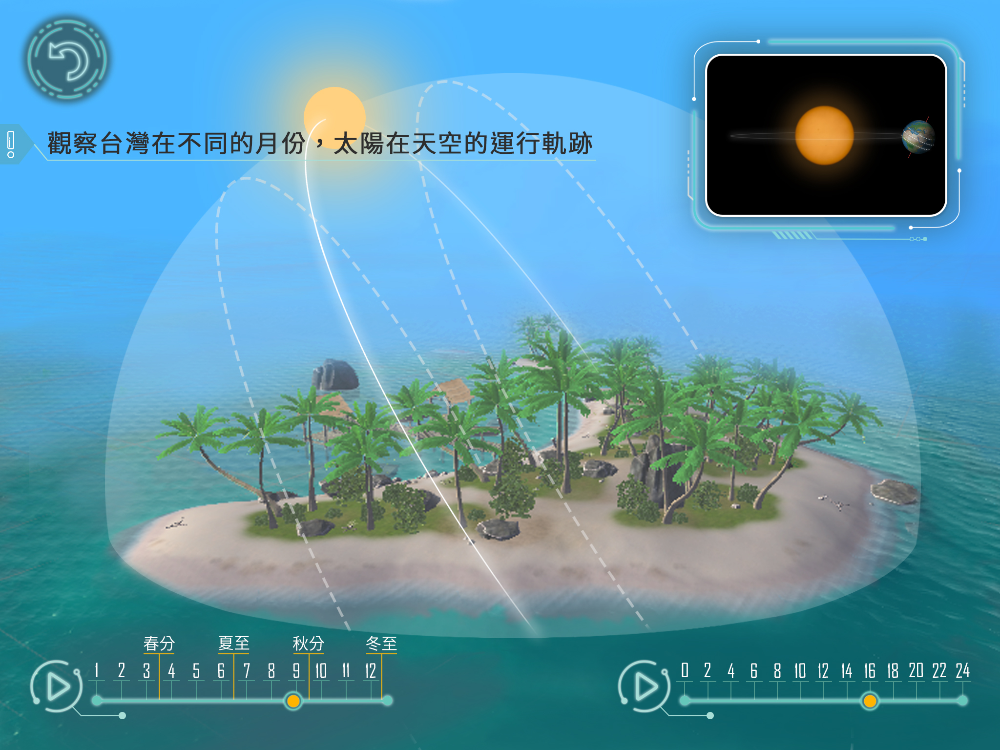

Little Planet with Big Secret
小行星大宇宙主要設計為國小學生自然科教具，其內容包括八大行星、彗星、竿影、月相等眾多主題。

在此計畫中我參與了各個關卡設計，並主要負責地球的公轉、自轉、以及太陽黑子關卡的製作。

除了文字的知識傳遞之外，也設計各種互動式操作，例如從宇宙看地球、以及從地球看太陽等不同角度，使用者能設定各種日期與時間，觀測天體的運轉模式。
小行星大宇宙主要設計為國小學生自然科教具，其內容包括八大行星、彗星、竿影、月相等眾多主題。

在此計畫中我參與了各個關卡設計，並主要負責地球的公轉、自轉、以及太陽黑子關卡的製作。

除了文字的知識傳遞之外，也設計各種互動式操作，例如從宇宙看地球、以及從地球看太陽等不同角度，使用者能設定各種日期與時間，觀測天體的運轉模式。